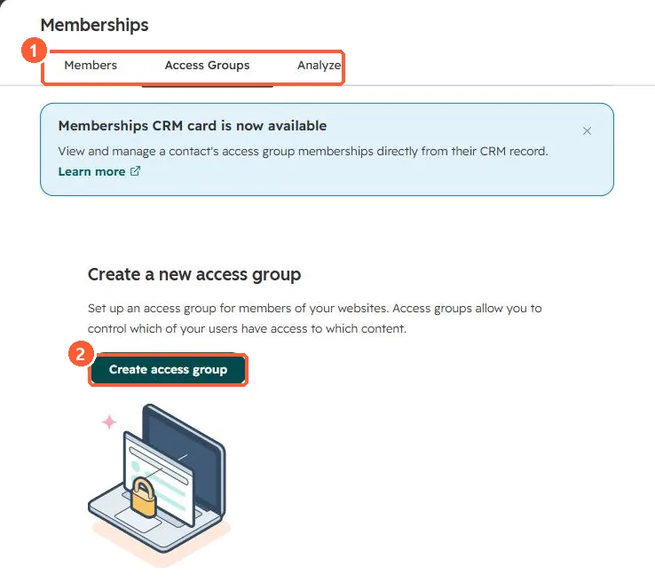

Short answer
HubSpot's KB (legacy portal settings): choose where portal tickets are sent, and set ticket permissions to only tickets they're associated with or all tickets from their company. With company access, customers can switch between their own and their company's tickets.
1. Access groups
Membership settings in my demo portal.


2. Private content
See memberships.